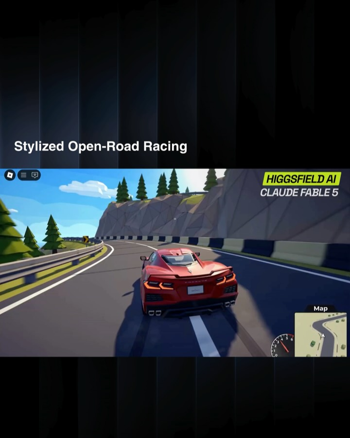
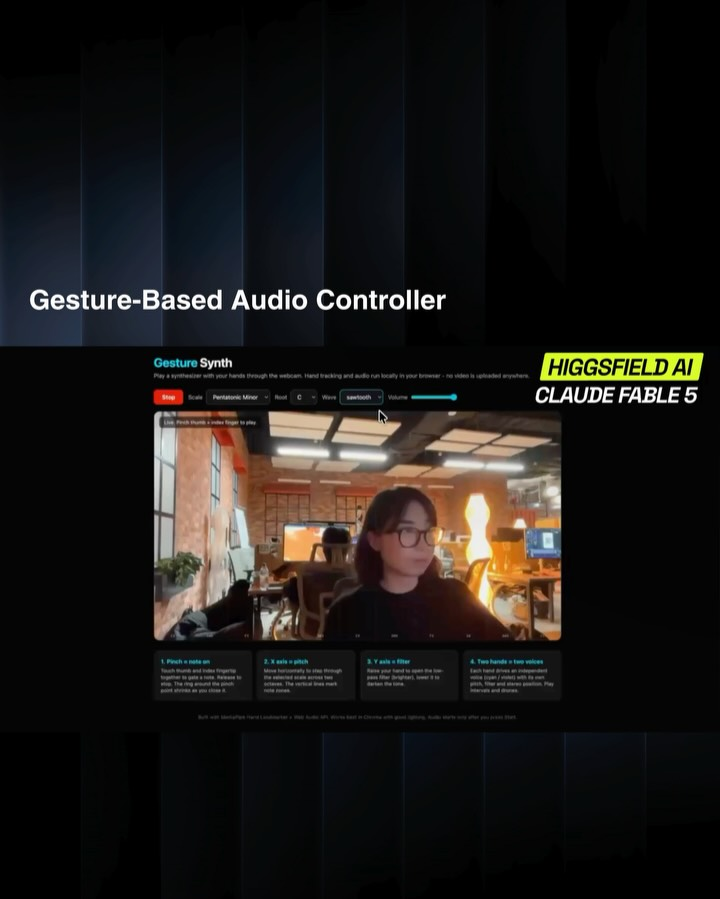
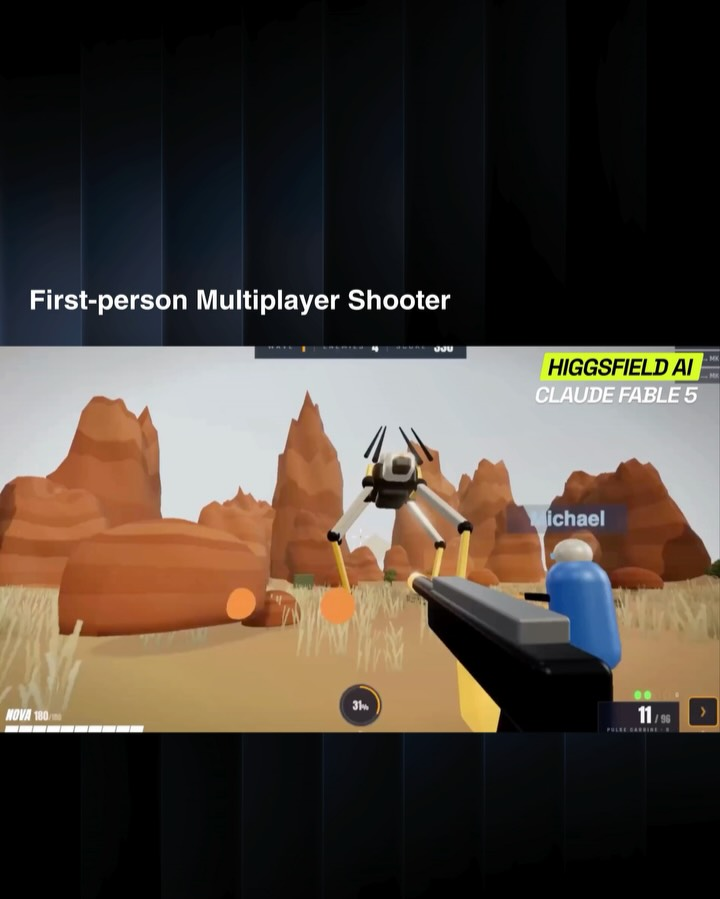
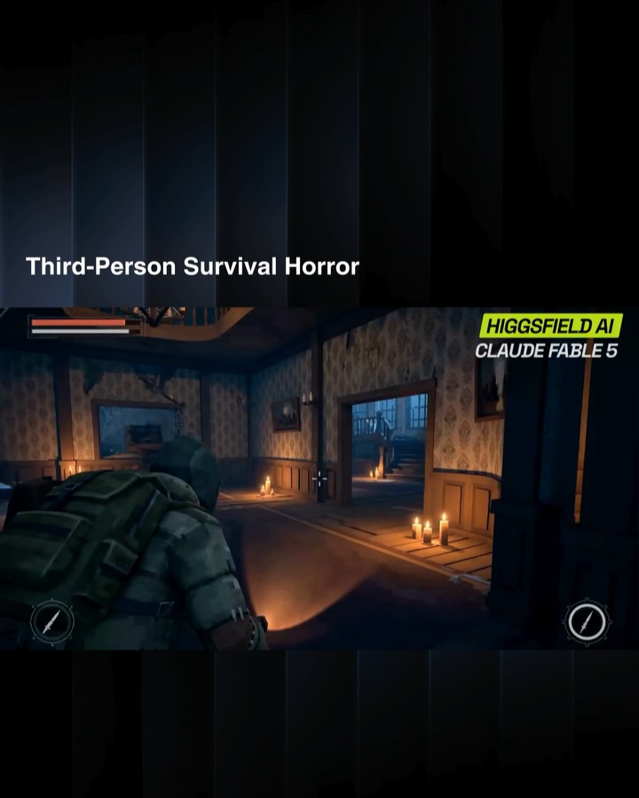
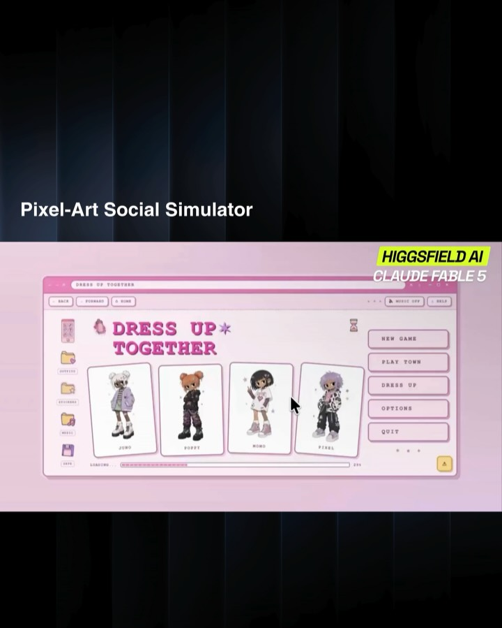
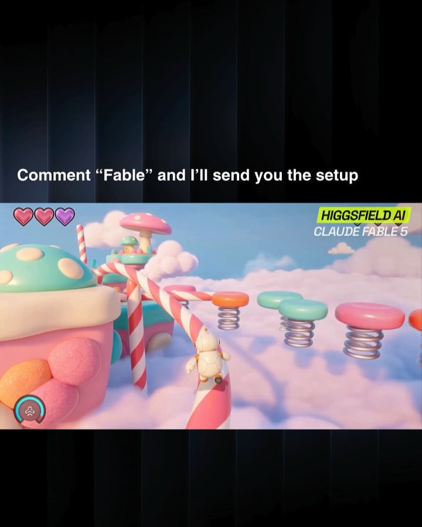

Instagram Post
artificialzone on June 12, 2026: "Anthropic’s new Claude Fable 5 can already...
carousel (10 slides) (enriched by ClaudeClaw)
Summary
Claude Mythos WITH HIGGSFIELD MCP, CLAUDE FABLE 5 CAN CRE... | Open-World Arcade HIGGSFIELD AI CLAUDE FABLE 5 | Real-Time Online Multiplayer Rocket +10 1 left Golden Bom... | Facial Expression Party Game SCREAM ENERGY 0 CROWD COUNT ... | Stylized Open-Road Racing HIGGSFIELD AI CLAUDE FABLE 5 Map | Gesture-Based Audio Controller Gesture Synth Play a synth... | First-person Multiplayer Shooter HI...
Caption
artificialzone on June 12, 2026: "Anthropic’s new Claude Fable 5 can already build games from a prompt.
Now it can generate the assets too.
Meet Higgsfield Games 🧩
For the first time, you can build and deploy multiplayer games from a single prompt, in any genre, 2D or 3D, with characters, props, environments, and gameplay all created inside the same workflow.
Powered by Claude Fable 5 and Higgsfield MCP.
What makes this different is that you’re not stitching together a dozen tools. The model handles the game logic, while Higgsfield MCP generates the visual assets needed to bring the world to life.
The result is everything from platformers and arcade games to multiplayer experiences being created from a conversation.
We’re quickly moving from AI that helps build games to AI that builds the entire game.
Try Higgsfield MCP on Claude.
Comment “FABLE” for the direct link".
1
Claude Mythos WITH HIGGSFIELD MCP, CLAUDE FABLE 5 CAN CREATE MULTIPLAYER GAMES, MOTION-CONTROL EXPERIENCES, SIMULATIONS, RPGS, AND ALMOST ANY INTERACTIVE WORLD YOU CAN IMAGINE (SWIPE LEFT)
Two men in fantasy-style, fur-trimmed clothing stand in a mountainous, cloudy landscape, with graphic overlays and text promoting a game or technology.
2
Open-World Arcade HIGGSFIELD AI CLAUDE FABLE 5
A video game screenshot depicts a character in a red cape holding a sword, facing a large robot on an Asian-inspired bridge with lanterns, overlaid with game UI and social media navigation elements.
3
Real-Time Online Multiplayer Rocket +10 1 left Golden Bomb +45 1 left Mega Bomb +20 1 left HIGGSFIELD AI CLAUDE FABLE 5 Rocket +10 1 left Golden Bomb +45 1 left Mega Bomb +20 1 left
The image displays a split-screen view of a video game featuring cartoon characters on a checkered grid arena with various items and obstacles.
4
Facial Expression Party Game SCREAM ENERGY 0 CROWD COUNT 0 19 DOOR Kira - Afraid of bulging eyes HIGGSFIELD AI CLAUDE FABLE 5 FACE WEIRDNESS 5% Pull a face: open your mouth wide, bulge your eyes, puff your cheeks. Keep switching - variety is key!
The image displays a video game interface featuring a cartoon door and floating cards, with a small video feed of a man smiling in the bottom right corner, and a title banner at the top reading "Facial Expression Party Game."
5
Stylized Open-Road Racing HIGGSFIELD AI CLAUDE FABLE 5 Map
A stylized video game scene displays a red sports car driving on a winding coastal road with trees and water, featuring a speedometer and mini-map on the game interface.
6
Gesture-Based Audio Controller Gesture Synth Play a synthesizer with your hands through the webcam. Hand tracking and audio run locally in your browser - no video is uploaded anywhere. Stop Scale: Pentatonic Minor Root: C Wave: Sawtooth Volume Use: Pinch thumb & index finger to play 1. Pinch a note on Touch thumb and index finger to play a note. Move your hand to vary the note. The ring around the pinch point shows as you cross it. 2. X axis = pitch Move your hand left to right through the x-axis to control the pitch of notes. The vertical lines mark note zones. 3. Y axis = filter Move your hand up and down through the y-axis to control the filter. The horizontal lines mark filter zones. 4. Two hands = two voices Each hand controls an independent voice. Use one hand to control pitch, filter and stereo pan/delay. Play intervals and chords. Built with MediaPipe HandLandmarker + Web Audio API. Works best in Chrome with good lighting. Audio starts only when you press Start. HIGGSFIELD AI CLAUDE FABLE 5
A screenshot of a "Gesture Synth" application interface is displayed, showing a woman demonstrating hand gestures for audio control within a video feed, with explanatory text and controls, all set against a dark background with additional branding text.
7
First-person Multiplayer Shooter HIGGSFIELD AI CLAUDE FABLE 5 Michael NOVA 100/100 40% 9 / 90
A first-person perspective video game screenshot shows a player holding a gun in a desert landscape with red rock formations, aiming at a large, multi-legged robot, with another player character visible in the distance.
8
Third-Person Survival Horror HIGGSFIELD AI CLAUDE FABLE 5
A third-person video game screenshot shows a character with a flashlight and knife in a dimly lit, old-fashioned room with patterned wallpaper, wooden floors, and a fireplace.
9
Pixel-Art Social Simulator HIGGSFIELD AI CLAUDE FABLE 5 BACK FORWARD HOME MUSIC OFF HELP DRESS UP TOGETHER INVENTORY OUTFITS WARDROBE SHOP SAVE JUNO POPPY MOMO FINNL LOADING NEW GAME PLAY TOWN DRESS UP OPTIONS QUIT
The image shows a screenshot of a pixel-art social simulator game interface with character selection and menu options, presented on a dark background with vertical light streaks.
10
Comment “Fable” and I’ll send you the setup HIGGSFIELD AI CLAUDE FABLE 5
A video game screenshot displays a whimsical, candy-themed world floating in clouds, featuring a small white character on a striped candy cane next to large cupcake and mushroom structures, with spring platforms in the background.
All slides





